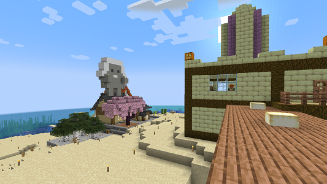
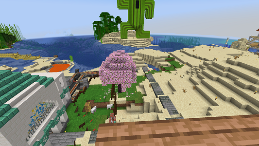
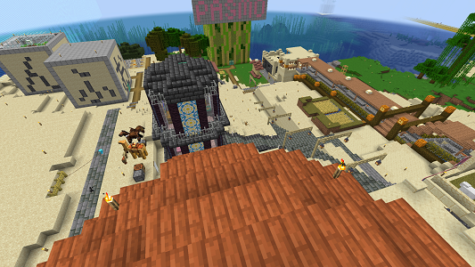
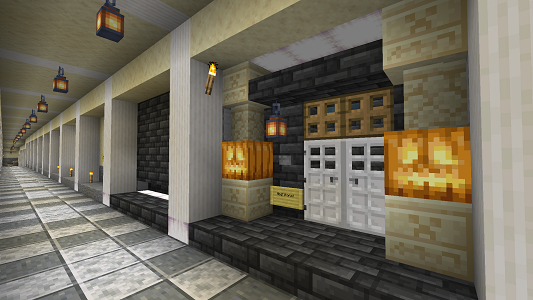

空き地紹介
#blank_00 島南西部

| build data | ____/__/__ | 座標 | x:____ y:____ z:____ |
|---|
横蹴線の高架から南側、オレンジ色の灯台として装飾された第二ゲートの近辺。
トロッコ１つで岩盤ゲートへもいけるし、通常のネザーゲートも近い。島倉庫からちょっとあるくのがネックか？ 南はサンゴ礁が広がるし、海中拠点なんてどうだい？
周囲の発展もキミ次第。重複なんて気にするな、君の暮らしやすいようにいろいろ作っていけ！
周辺住民：パルプンテ・月雲・ゆきかぜもん
#blank_01 島南東部

| build data | ____/__/__ | 座標 | x:____ y:____ z:____ |
|---|
倉庫直通地下鉄の地上駅からさらに南側、でかい緑色のアイツの庇護のもと、君の別荘を立ててみないか？マグマの池もいまならアレンジし放題だ！
直通地下鉄にのれば本土ジャッカルの倉庫まであっという間だし、島の倉庫へも道を１本北上するだけ。結構いい立地だぜ。
ジャングルに密接しているっていうのもただの砂漠な島北部とは違うアクセントだ。
周辺住民：楽器奏者(南東の小島)・よるぴ(主な設備建築ゾーンとして)
#blank_02 島北東部

| build data | ____/__/__ | 座標 | x:____ y:____ z:____ |
|---|
にぎやかじゃないと嫌だよってキミ！まだ少しなら、北東部も空き地があるぜ！土地をつかって構わないかは、 隣接している隣人たちか葱戸に訊いてみてくれ！地上で空いていても地下で敷地が広がってることもあるからな！
第一ゲートがあって、２つの商店街にほど近い！便利さでいえば一等地だぜ。
まるで「前から島にいました！」って顔して、xciss島にcome on, join us!
周辺住民：xciss・pucca・よるぴ
#blank_03 島地下／東西地下道

| build data | ____/__/__ | 座標 | x:____ y:____ z:____ |
|---|
建築に自信がない？別に家を立てなきゃいけないってわけじゃあ、ないのさ。スペースだけほしいなら東西地下道は、どうだい？ 地下施設から各所に抜群のアクセスを誇るぜ。この通路の側面を必要なぶんだけえぐり取って、自分の部屋にしちまえばいい。
これなら、必要なデザインセンスは壁１枚ぶんだけだ。
画像例：葱戸まと地下宅